Curso gratuito exclusivo para novos seguidores Médicos e Acadêmicos de Medicina.

A Base para Dominar as Pequenas Cirurgias, curso gratuito!
Um curso que vai te ajudar no que você precisa compreender para começar de forma organizada ou avançar com mais domínio nos procedimentos que mais realiza. Ensinamentos não óbvios que eu pagaria para ter recebido na graduação, na residência e principalmente depois dela.
Dra. Lulma Bhering | Cirurgiã Geral | CRMMG: 71176 RQE: 50890
Para quem é este curso?
Veja se este curso gratuito é para você:
Para médicos e acadêmicos de medicina.
É um curso EXCLUSIVO para médicos e acadêmicos de medicina!
Para quem atua ou deseja atuar nas Pequenas Cirurgias.
Este curso foi desenvolvido e estruturado para quem já atua ou deseja atuar nas Pequenas Cirurgias.
Para todos os médicos (com ou sem especialidade).
Este curso foi desenvolvido para todos os médicos, independente se você tem ou não alguma especialidade na medicina.
AULA 1: Comece por aqui
- Aqui está o seu guia para começar este curso, esta aula é obrigatória para você dar continuidade nas demais.

AULA 2: O que você ainda não enxergou nas Pequenas Cirurgias
- Nesta aula eu vou te mostrar o que a faculdade e a residência ainda não te ensinaram sobre o mercado de trabalho e por que isso é tão importante para você atuar nas Pequenas Cirurgias.

PDF de como investir pouco para atuar nas Pequenas Cirurgias.
AULA 3: Seu paciente não é simulador de treinamento
- Aqui eu apresento algo que considero obrigatório para você atuar nas Pequenas Cirurgrias, independente do seu momento profissional.

AULA 4: O erro que acontece antes da sua cirurgia
- Aqui eu mostro a armadilha que pode arruinar as suas Pequenas Cirurgias.

AULA 4.1: Continuação da aula 4
- A técnica é apenas uma parte da cirurgia. Nesta aula, você vai compreender por que a documentação é um dos pilares de uma atuação organizada nas Pequenas Cirurgias e como ela impacta muito mais do que a maioria dos médicos imagina.

AULA 5: Como escolher os seus próximos casos nas Pequenas Cirurgias
- O próximo procedimento que você deve aprender não é, necessariamente, o mesmo de outro médico. Nesta aula, você vai entender como tomar essa decisão de forma consciente e construir uma evolução compatível com a sua experiência e os casos que já realiza.

AULA 6: Construindo sua própria atuação nas Pequenas Cirurgias
- Uma atuação sólida nas Pequenas Cirurgias não é construída apenas dentro da sala de procedimento. Os fundamentos apresentados ao longo deste curso são apenas o começo. Nesta aula, você vai entender como esses pilares se conectam e por que dominar a técnica é apenas uma parte da construção de uma atuação consistente.

Sua Mentora
Conheça a
Dra. Lulma Bhering
Olá, sou a Dra. Lulma Neves Bhering, formada pela Universidade Federal de Juiz de Fora (UFJF) em 2016 e com residência em Cirurgia Geral pelo Hospital Regional João Penido (Fhemig). Após anos conciliando cirurgia com medicina intensiva e emergências, encontrei nas Pequenas Cirurgias uma forma de alavancar minha carreira. Com mais de 3.000 Pequenas Cirurgias realizadas (e contando!) e quase 10 anos de experiência, transformei minha carreira em um verdadeiro laboratório de sucesso. Hoje, minha maior renda na medicina vem das Pequenas Cirurgias e me dedico a capacitar médicos como você a dominarem esta área e alcançarem uma nova realidade profissional. Como criadora do Treinamento Completo de Pequenas Cirurgias, desenvolvi um método único que não apenas ensina técnicas cirúrgicas, mas oferece um caminho completo para o sucesso nesta especialidade. Atualmente sou professora na faculdade de medicina na disciplina de Urgência e Emergência, onde também ensino procedimentos cirúrgicos no contexto hospitalar da urgência. Estou aqui para guiá-lo em cada passo dessa jornada transformadora.
FAQ
Perguntas frequentes
Não sou médico, posso assistir est curso gratuito?
NÃO. O curso é exclusivo para médicos e acadêmicos de medicina. Este perfil é exclusivo para médicos e acadêmicos de medicina.
Tem certificado?
Não. Este é um curso livre sem certificado.
São quantas horas de curso?
São mais de 4 horas de curso com conteúdos ricos para quem atua ou deseja atuar nas Pequenas Cirurgias.
Qual o valor do curso?
O curso é gratuito, fiz com a intenção de ajudar os médicos e acadêmicos de medicina!
Qual o tempo que vou ter de acesso?
Não tem um tempo de acesso específico por ser gratuito, recomendo que assista o quanto antes enquanto está de forma gratuita e com o tempo de acesso indeterminado.
Tenho direito a suporte?
Sim, se você tiver alguma dúvida, pode me enviar no direct do instagram! Só me informe que você é aluna (o) deste curso.
Preciso ter alguma especialidade para fazer o curso?
Não, este curso foi desenvolvido para médicos com ou sem especialidade. Qualquer médico ou acadêmico de medicina pode fazer este curso.
Ainda com dúvidas?
Clique no botão abaixo e fale com nossa equipe no WhatsApp. Estamos prontos para te ajudar!
Dra. Lulma Bhering | Cirurgiã Geral | CRMMG: 71176 RQE: 50890